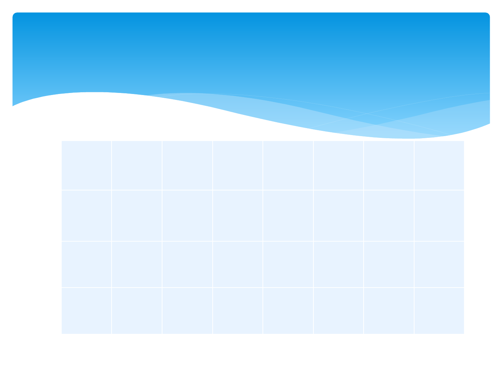
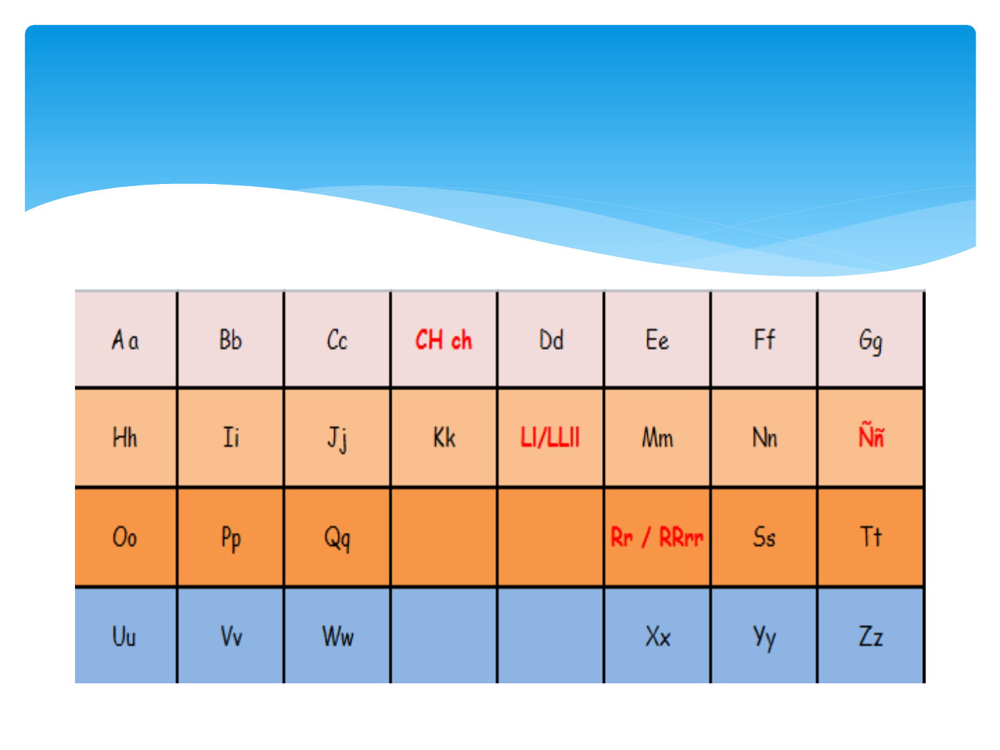
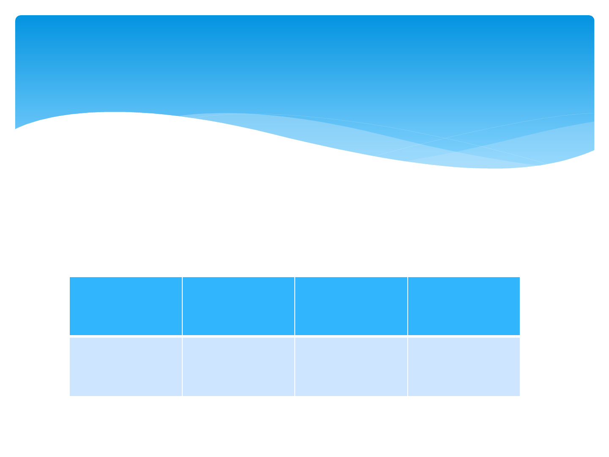
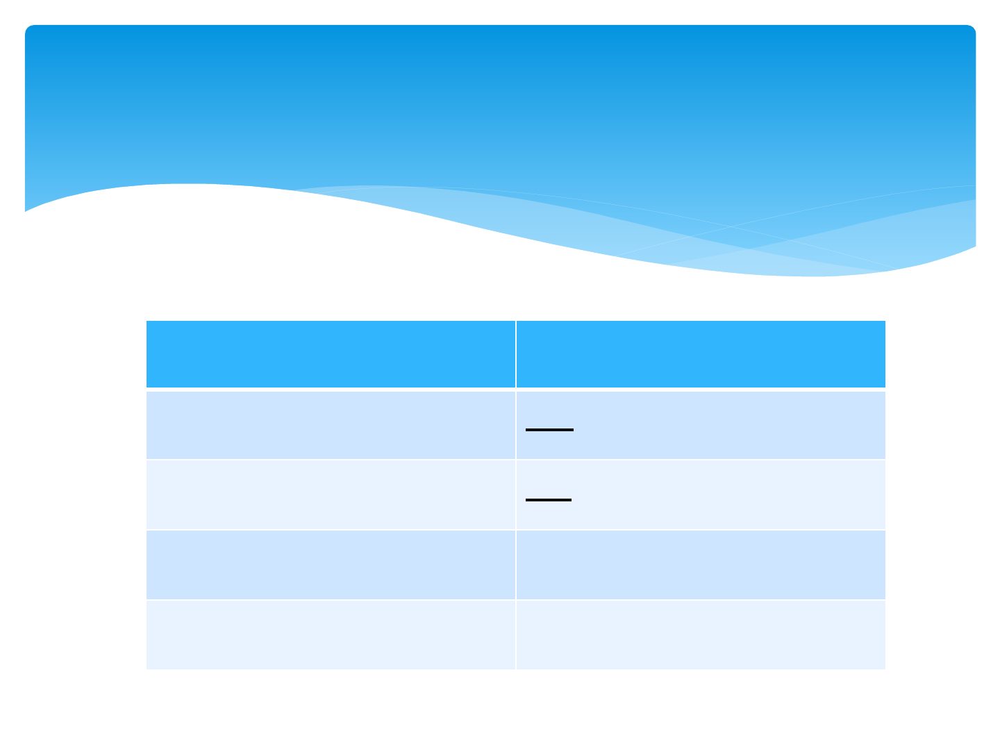
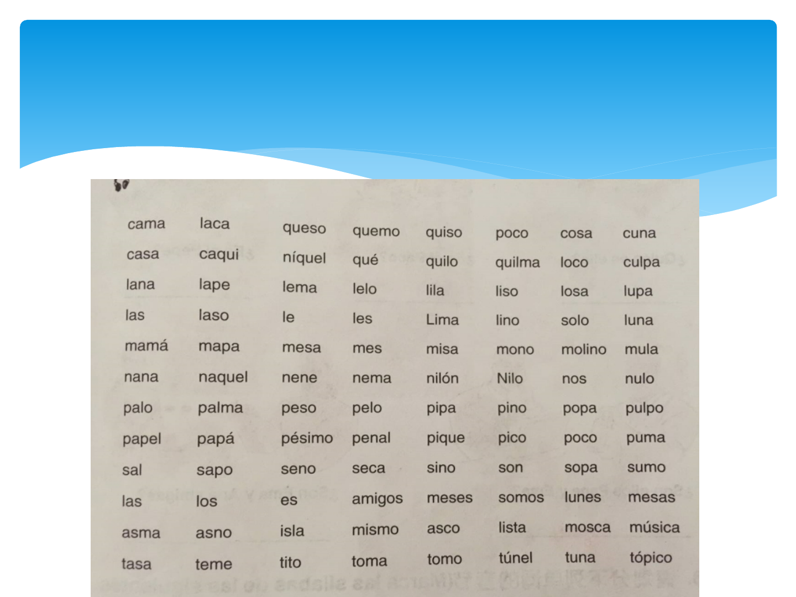
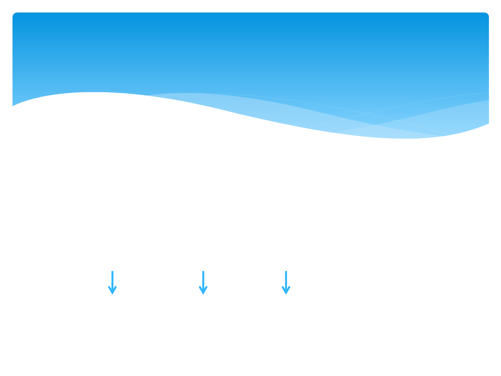
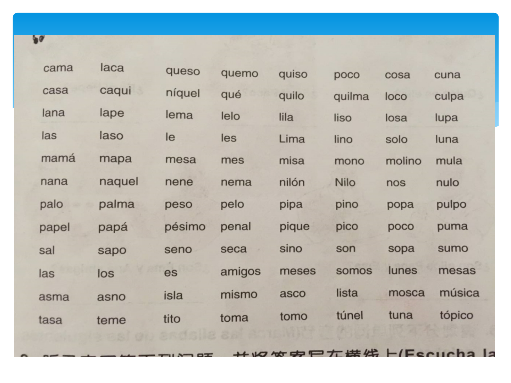
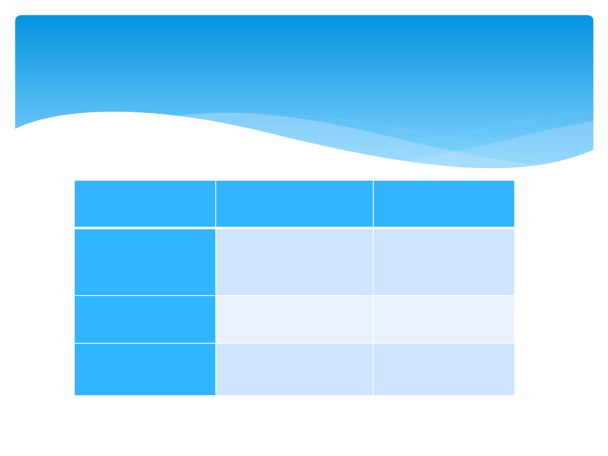
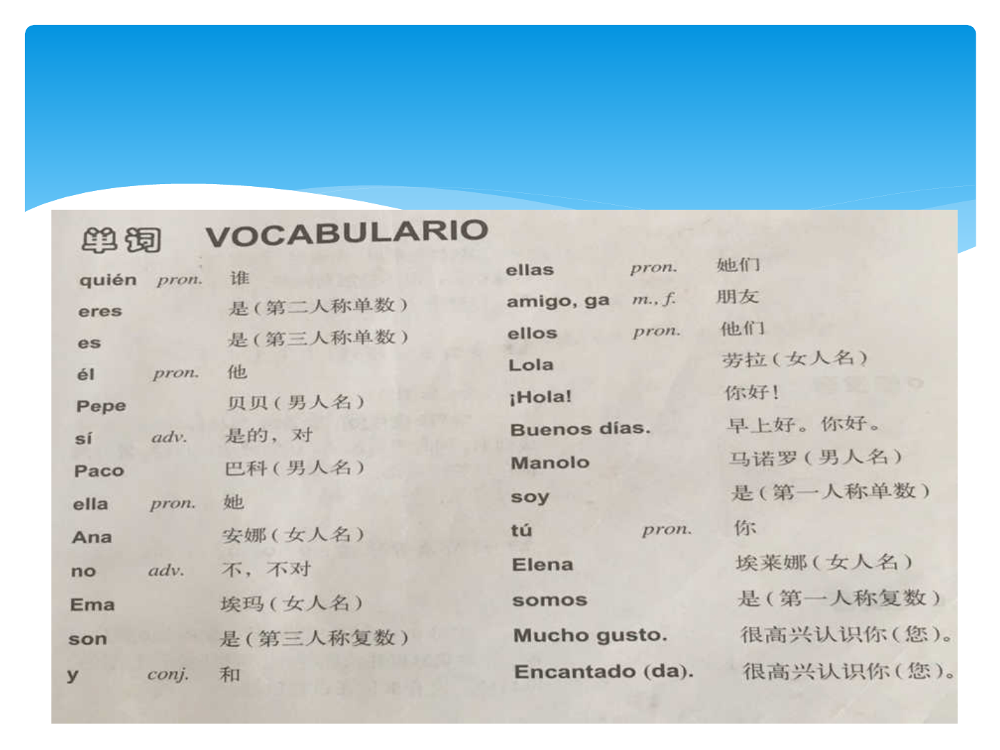

我们的第一堂西班牙语课程
Bienvenidos a la primera clase de
español

Aa Bb Cc CHch Dd Ee Ff Gg
Hh Ii Jj Kk Ll/LLll Mm NnÑñ
Oo Pp Qq
Rr/RRrr Ss Tt
Uu Vv Ww
Xx Yy Zz
Alfabeto
和英语不同的是，西班牙语字母表中多出了3个不同
的字母，他们分别是：ch，ll，ñ，但是1994年以后，
西班牙皇家学院决定ch和ll不再是独立字母，所以只
有27个字母。
五个元音，其他都是辅音，五个元音分别是 Aa,Ee,
Ii,Oo,Uu.
西班牙语一共有多少个字母呢？

西语没有音标，发音一旦掌握后，一劳永逸。因为
在掌握了西语每个字母的发音规则之后，就可以准
确读出每个单词，因此，就算你看不懂文章，却可
以用标准的西语朗读任何一篇文章，读出西语中任
何一个单词。
西班牙语发音，一次搞定

对于初学者来说容易在哪？
Ø虽然和英语不属于同一个语系，但是在很多词的结
构上，可以相互借鉴。
猜猜下面的单词是什么意思？
profesorafruta
Mapamuchosofá
Octubrerestaurante
西语难不难？

对于初学者来说难在哪里？
Ø动词各个时态，各个人称的变位
Ø名词，形容词，代词，冠词等阴阳性，
单复数之分

字母名称和发音

熟读29个西语字母，并能流利按顺序背出。
Ejerciciosenclase随堂练习
请拼读一下单词
EJERCICIOS练习
Hola Soy María Luisa
Bienvenido todos Clase Español

A E I
A E I
O U
O U
五个元音字母的发音

辅音字母发音
c和q
ca
que ce
qui ci
co
cu

读出下列单词
Caquequicocu
Acaequeiquiocoucu

L发音有两种：
1.置于元音前，和英语或者中文中发音一样，
如：
Lalelilolu
Alaeleilioloulu
2.置于元音后，请看老师示范
alelilolul
辅音字母发音
L,M,N

M的发音
M发音只有一种，不论什么情况，都是发/m/
音 ，如：
mamemimomu
amaemeimiomoumu

N的发音
同字母m一样，n发音只有一种，不论什么情
况，都是发/n/音 ，如：
naneninonu
anaeneinionounu

p的发音
清辅音，声带不震动
papepipopu
apaepeipiopoupu

s的发音
s发音分两种情况：
1.词首，元音前，清辅音，发/s/音
sasesisosu
asaeseisiosousu
sanosalasenososo
若在词尾，也发/s/音，但发音弱且短，不能拖长
音
mesmasassalas

2.当s出现在l，m，n之前，发浊化音，接近于/z/音
asma， asno，isla，mismo,pasma

t的发音
清辅音，声带不震动，发成/d/的音
tatetitotu
ataeteitiotoutu

Ejercicios发音练习

第一步：划分音节
1. 必须有元音才能构成音节，一个元音可以单独构成
音节，或者和其他辅音字母构成音节
Ana：a-naella:e-lla
2. 元音也可同时和几个辅音构成音节，辅音可在元音
前或后，如果辅音在2个元音之间，和后面元音构成
音节。
es： esél:él
son： sonno:no
Pepe:Pe-peManolo:ma-no-lo
怎样准确拼读一个单词

第二步：找出重音
1. 如果单词上本身就标有重音符号，就不
需要找重音
rápidosótanoéste
rá-pi-dosó-ta-noés-te

2. 如果单词上没有重音符号，分两种情况：
a. 单词最后一个字母为元音字母（a，e，i,o,u），
或者是n，s，重音在倒数第二个音节上
如：
estees–te és-te
menosme-nosmé-nos
2.comenco-mencó-men
a.
b.

b.单词最好一个字母为辅音(除n，s以
外)，重音在倒数第一个音节上。
nasalna-salna-sál


西语和中文不同的
标点符号书写
符号名称
中文 西班牙语
句号
。
.
问号
？
¿……?
感叹号
！
¡……!
amigo男性朋友 amiga
女性朋友
profesor男老师
profesora女老师
amigo一位男性朋友amigos很多位朋友
profesora一位女老师 profesoras很多女老
师
名词的阴阳性 &单复数
